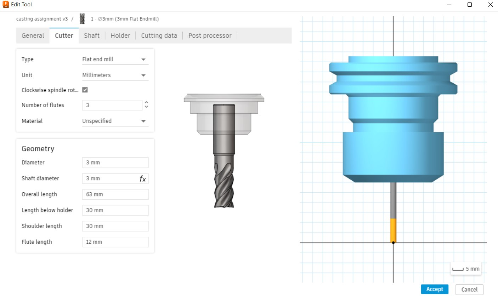
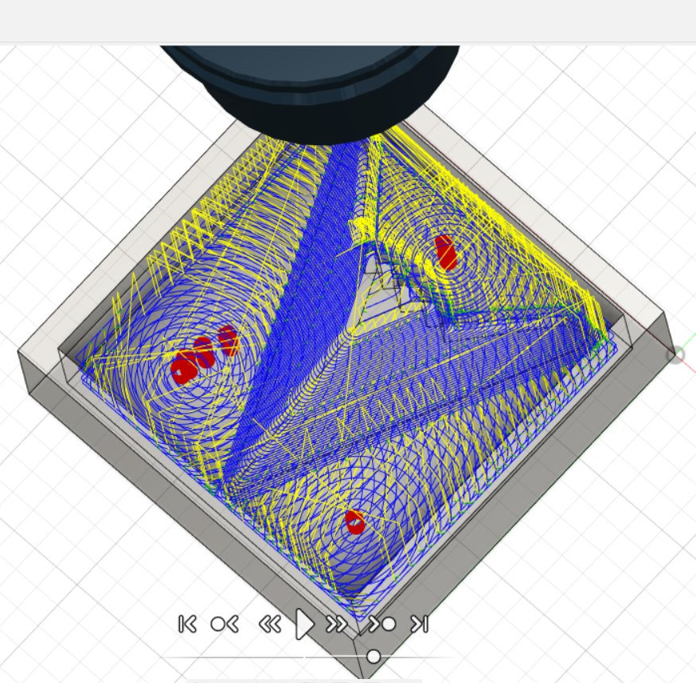
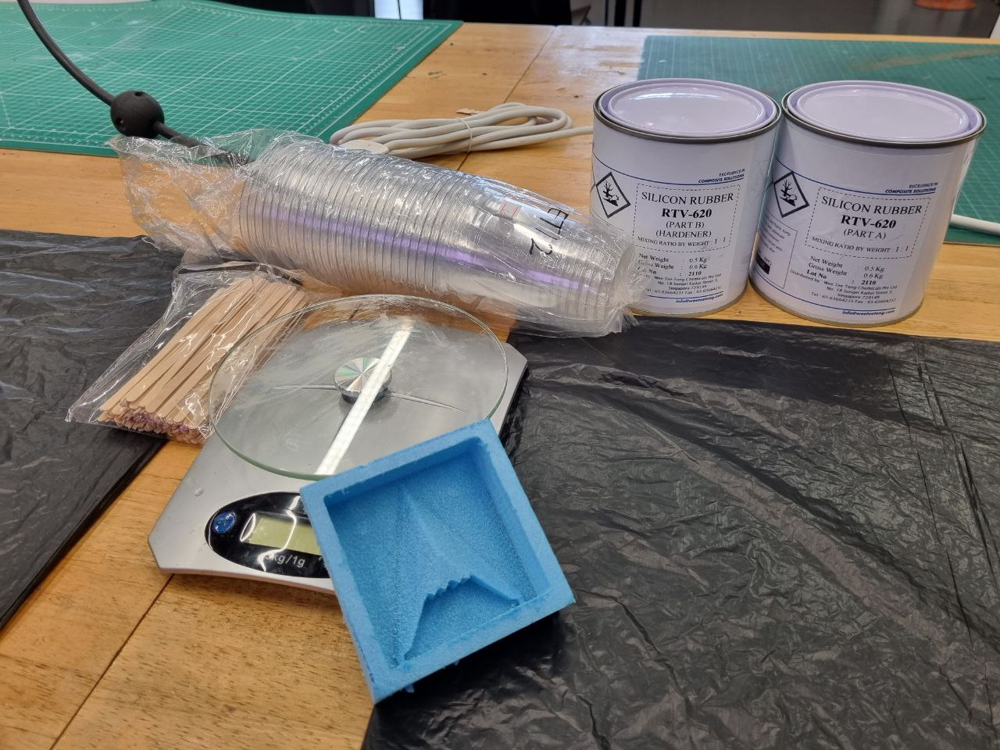
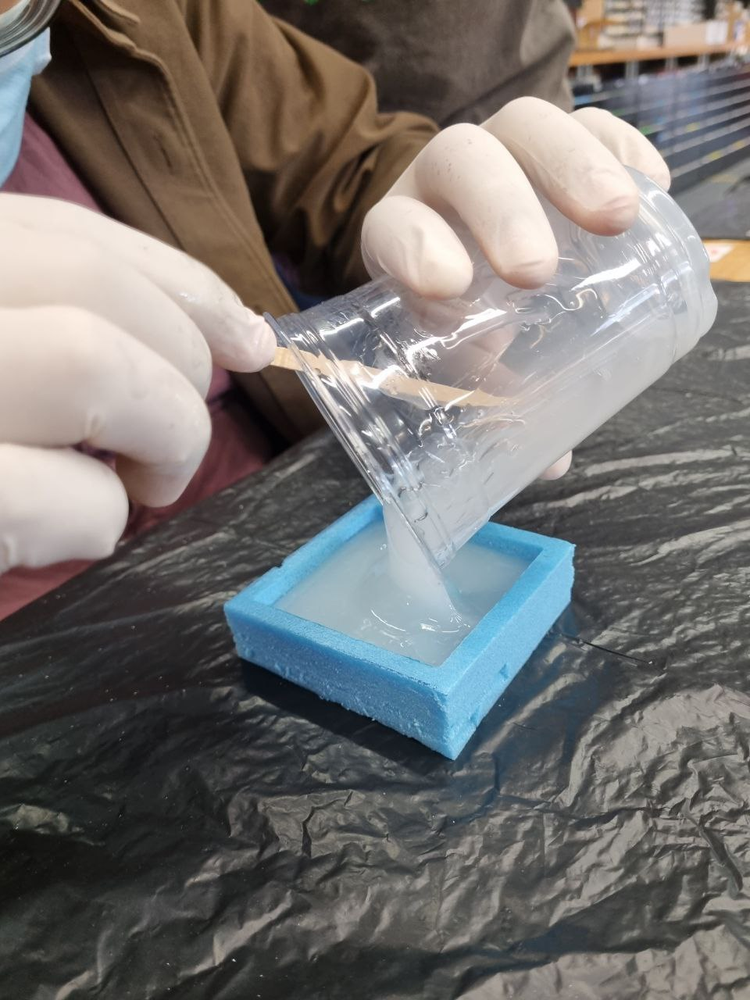
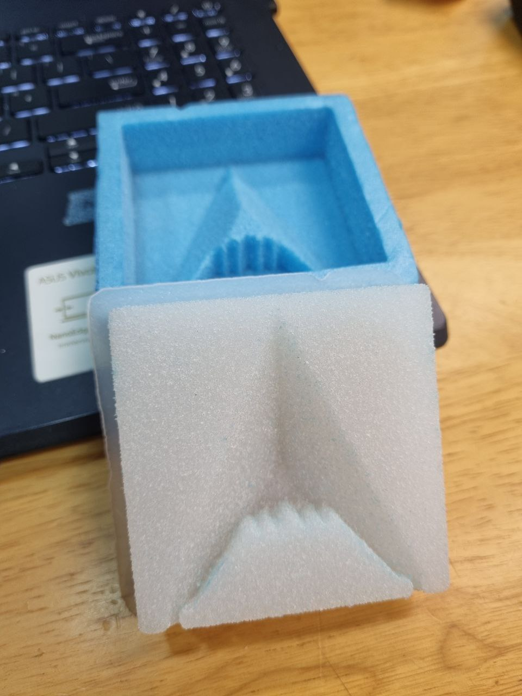
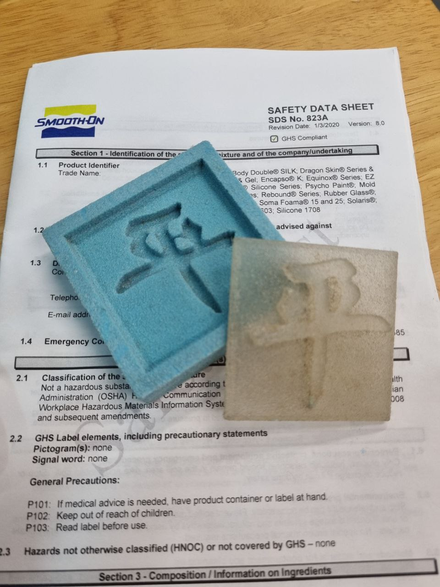
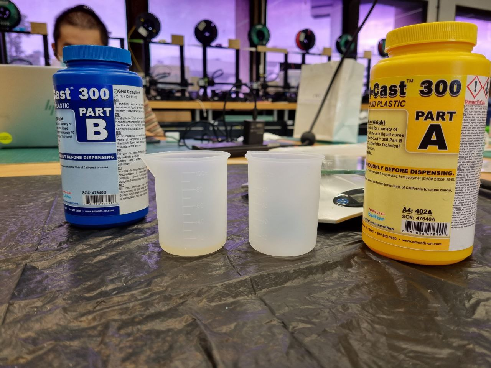
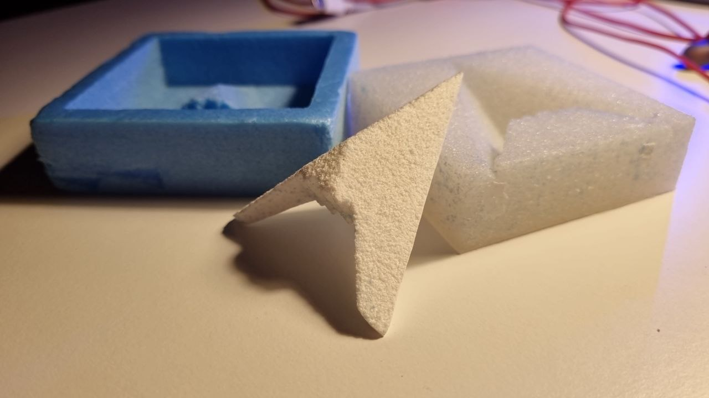

In this part I am covering molding and casting. Molding is widely used for fabricating intricate parts around the world. It is a manufacturing process that consist of a liquid material poured into a mold, following that the cast is then left for a period of time to be cured and a casted product is made. Usually casted products are intricate products that cannot be manufactured by machined processes such as lathing or milling. This is important as casted parts are widely used especially in products that need space savings. For example, the skeleton of a typical assembly built car is usually fabricated by casting! Here in this module I learnt how to mold and cast using a 3 part process: Positive mold, Negative mold and Positive cast. For the fist positive mold a rigid foam is used to form a mold. Next up the second negative mold is made out of silicon rubber. Lastly, the positive cast is made out of a resin. Explained below is how the process goes.
First up, a master is needed to be cnc machined, this done by designing a 3D model of the cast in Fusion360. The model must be a positive mold where the silicon rubber is able to be poured into. Thus, below is a 3D model of the mold.
Upon finsihing designing, I needed to generate the g-code for the mini cnc machine in FabLab in T1442. Usually g-codes are generated VCarve Pro but this time I wanted to try generating with the in-built CAM software in Fusion360. Thus I tried generating it on my own laptop. First off I needed to click on the manufacturing tab on the top left. Then I used the adaptive clearing function to produce my mold.
Before putting in the function I am required to specify the tool used thus I selected the tool available and subitable for my product. Below is a picture of the tool used.
Following the selection of the tool, I started to add in the adaptive clearing function to cut my piece out. This part took rather long on my computer as the cutting path needed to be generated. I actually generated the adaptive clearing function twice so that I can get a better surface finish. Below is a picture of the simulation toolpath!
After that I generated the g-code and used the stepcraft cnc router to mill my rigid foam.
After I gotten the rigid foam mold, I prepared the silicon rubber. In this part I had 2 parts, parts A and B. I had to mix the parts ratio by weight 1:1. The weights were carefully measured by the electronic weiging scale in plastic cups. In this process I also wore golves to prevent the spillage of the liquid onto my fingers.
Upon mixing the 2 parts using the coffee sticks above, I carefully poured them into my rigid foam mold. The silicon rubber is able to degas itself thus removing cavitations in the mold. The cure time for the silicon rubber took a few days and I could only touch it the following week when it hardens and was safe to handle.
In the following week, the silicon rubber hardened and it was time to remove it from the rigid foam mold. This took some effort as the silicon rubber had adheared to the rigid foam quite well. In addition to that, I did not want to break the foam as well. But with some patience I managed to get it out!
Next up, its the final resin cast! This process is similar to the silicon rubber as it consisted of 2 parts as well. However this time the characteristics of the liquid is different and its specifications are different too. Thus, I need to look at the material safety data sheet. This information card is important as it informs the user of the dangers and how best can it be handled.
Now that I have read on the essential information, I was ready to prepare the resin and pour it into my mold. The parts needed to be mixed by volume by a ratio of 1:1. This is slightly different from the silicon rubber as the density of parts A and B are different. Thus measuring by weight will not be of the sufficient amount of mixed parts for the resin.
After mixing the parts well together, I poured the resin into my silicon rubber mold. This time the resins cure time is much much faster than the silicon rubber and its safe to handle time is just 10 minutes, meaning after 10 mintues I can take it out of the mold. Below is a time laspe of the curing of the resin, look at how fast it hardens!
After my resin is cured I could take the cast out easily due to the rubbery nature of the silicon rubber. This allowed me to bend the rubber mold and remove the cast. Upon taking it out, I used some diamond files to sharpen and clean out the edges and it came out beautiful!
Click here to return back to documentations!!